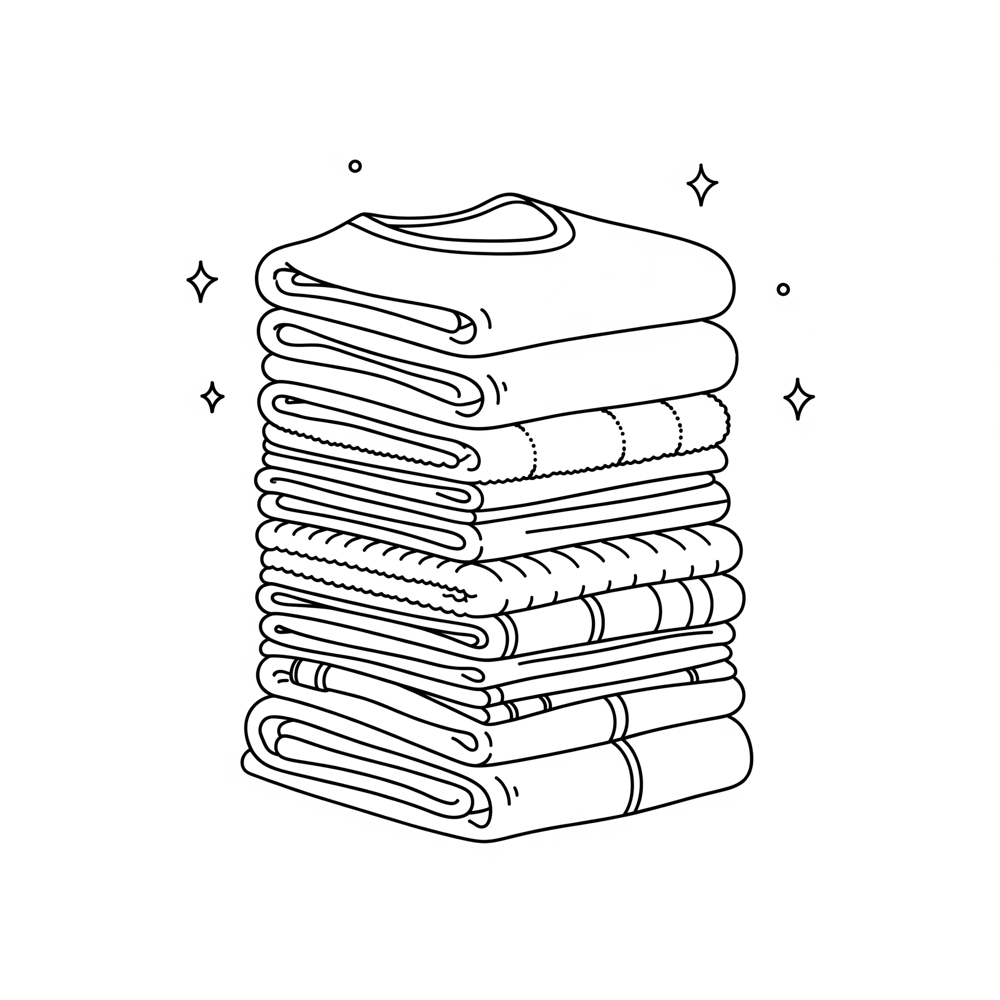

Menaklukkan Gunung Rinjani selama beberapa hari tentu memberikan kepuasan batin yang luar biasa. Namun, di balik foto-foto indah di puncak, ada satu masalah klasik yang sering dihadapi para pendaki saat tiba di basecamp: setumpuk pakaian kotor yang berbau keringat dan debu pegunungan.
Bagi wisatawan yang masih memiliki jadwal perjalanan lanjutan ke Gili Trawangan, Bali, atau langsung menuju bandara untuk penerbangan pulang, membawa ransel berisi pakaian kotor yang lembab tentu sangat tidak nyaman. Mengemas baju kotor bersama baju bersih lainnya bisa membuat semua barang bawaan Anda ikut berbau.
Layanan Express Laundry Khusus Pendaki
Memahami kebutuhan para tamu, Rinjani Trekking Pro kini menyediakan layanan **Express Laundry** tepat di basecamp kami. Anda tidak perlu lagi pusing memikirkan cucian kotor setelah lelah mendaki berhari-hari.
Fasilitas laundry kami menggunakan deterjen berkualitas yang ampuh mengangkat noda tanah dan menghilangkan bau keringat membandel pada perlengkapan *outdoor* Anda, tanpa merusak serat kain pakaian mendaki Anda.

Serahkan pakaian kotor Anda, dan ambil dalam keadaan bersih, wangi, dan rapi.
Bagaimana Cara Kerjanya?
- Begitu tiba di basecamp dari jalur pendakian, serahkan kantong pakaian kotor Anda kepada staf kami.
- Sementara Anda beristirahat, mandi air hangat, atau menikmati makan malam, tim laundry kami akan langsung memproses pakaian Anda.
- Pakaian Anda akan dicuci bersih, dikeringkan secara optimal, dan disetrika rapi (kecuali untuk bahan jaket/pakaian khusus yang tidak boleh disetrika).
- Pakaian siap dipacking kembali ke dalam ransel Anda dalam keadaan bersih dan wangi keesokan paginya, siap untuk melanjutkan liburan!
Layanan Praktis & Terjangkau
Nikmati perjalanan pulang yang ringan tanpa beban cucian kotor. Tanyakan kepada guide atau staf basecamp kami mengenai layanan laundry ini setibanya Anda turun gunung.
Info Layanan Laundry